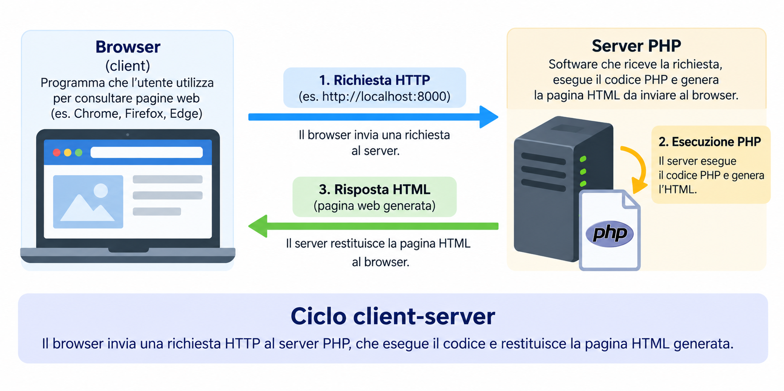

Pagina HTML
Il browser legge il contenuto scritto nel file e lo rappresenta.
Lezione 1 · M0 · Informatica · Classi quinte
Avviamo un server locale, eseguiamo poche istruzioni e osserviamo che cosa riceve davvero il browser.
Richiamo iniziale
Hai già incontrato il linguaggio PHP: Hypertext Preprocessor (PHP), il linguaggio HyperText Markup Language (HTML) e il protocollo Hypertext Transfer Protocol (HTTP). Oggi ci interessa soltanto rivederli in azione.

Il browser legge il contenuto scritto nel file e lo rappresenta.
Il server HTTP riceve la richiesta; l’interprete PHP esegue le istruzioni e il server invia al browser l’HTML prodotto.
Al termine
Creare la cartella di lavoro, il file index.php e avviare il server locale.
Aprire una pagina PHP da http://localhost:8000 e modificarne il risultato.
Confrontare il programma sul server con il codice HTML ricevuto dal browser.
Preparazione
Prepara una cartella chiamata lezione1-php e aprila nel tuo editor.
All’interno della cartella crea index.php. Il nome index indica la pagina che il server cerca quando nell’indirizzo non specifichiamo un file.
Esegui dir e verifica che nell’elenco compaia index.php.
dirLascia aperto questo terminale mentre lavori.
php -S localhost:8000Nel browser visita:
http://localhost:8000Primo risultato
Inserisci questo codice in index.php, salva e aggiorna il browser:
<?php
echo "Ciao mondo!";
?>Ora sostituisci il contenuto del file con questa pagina completa:
<!doctype html>
<html lang="it">
<head>
<meta charset="utf-8">
<meta name="viewport" content="width=device-width, initial-scale=1">
<title>La mia prima pagina PHP</title>
</head>
<body>
<h1>La mia prima pagina PHP</h1>
<?php
echo "<p>Ciao dal server!</p>";
?>
</body>
</html>Il codice HTML descrive la pagina. Le istruzioni comprese tra <?php e ?> vengono invece eseguite dal server prima dell’invio al browser.
Un dato che può cambiare
Una variabile è un nome al quale assegniamo un valore che il programma può usare. Modifica il blocco PHP in questo modo:
<?php
$nome = "Giulia";
$classe = "5F";
echo "<p>Ciao $nome!</p>";
echo "<p>Frequenti la classe $classe.</p>";
?>$ identifica una variabile PHP;= assegna un valore;echo produce un output;Esperimento importante
Controlla che nel browser compaiano i valori delle variabili.
Usa il comando del browser “Visualizza sorgente pagina”; in molti browser puoi premere Ctrl+U.
Trovi $nome, echo oppure i delimitatori <?php ... ?>?
Nel sorgente ricevuto dovresti vedere HTML e i valori prodotti, ma non le istruzioni PHP originali.
Se hai terminato
presentazione.phpSe hai completato le attività precedenti, prova a creare una seconda pagina PHP in autonomia.
Crea nella stessa cartella una piccola pagina di presentazione. Definisci almeno le variabili $nome, $classe e $materia, quindi usale per generare contenuto HTML.
La pagina è completa quando:
http://localhost:8000/presentazione.php;echo;Copia la struttura HTML di index.php, cambia il titolo e prepara le variabili all’inizio del blocco PHP.
<!doctype html>
<html lang="it">
<head>
<meta charset="utf-8">
<meta name="viewport" content="width=device-width, initial-scale=1">
<title>Presentazione</title>
</head>
<body>
<?php
$nome = "Giulia";
$classe = "5F";
$materia = "Informatica";
echo "<h1>Benvenuta, $nome!</h1>";
echo "<p>Classe: $classe</p>";
echo "<p>Materia: $materia</p>";
?>
</body>
</html>Verifica rapida
echo?file:// e tramite http://localhost:8000?file:// apre direttamente il file; l’indirizzo HTTP invia la richiesta al server, che affida il codice all’interprete PHP prima di rispondere.In breve
Browser → richiesta HTTP → server → esecuzione PHP → risposta HTML → browser
Oggi bastano questo percorso, poche variabili e echo. Gli altri costrutti del linguaggio arriveranno nelle lezioni successive.